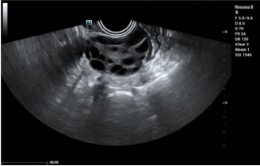
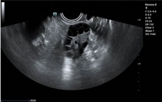
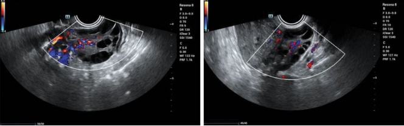

7.3.2 多囊卵巢综合征（PCOS） (PCOS)
1. 临床概述：
多囊卵巢综合征（PCOS），又称斯坦-莱文塔尔综合征，是根据欧洲人类生殖与胚胎学学会（ESHRE）和美国生殖医学学会（ASRM）于2003年提出的鹿特丹标准诊断的。诊断需要满足以下特征中的两项，并排除其他高雄激素状态：
(1) 排卵功能减退或无排卵
(2) 多雄激素的临床和/或生化指征
(3) 超声可见多囊卵巢：一侧或双侧卵巢内 $\geq$12个卵泡（直径2–9 mm）和/或卵巢体积 $\geq$10 mL [56]
- 临床表现：
常见的临床表现包括以下几项：
- 月经不调：月经量少或无经，子宫出血不规则
• 多毛症：多毛、痤疮和黑棘皮病
• 不孕症
• 肥胖
- 超声特征：
超声可识别多囊卵巢形态（PCOM），但不能确诊多囊卵巢综合征（PCOS）。评估时应排除黄体、囊肿或直径 $\geq$10 mm的优势卵泡的存在。主要的超声特征包括以下几点：
(1) 双侧卵巢均匀增大，边界清晰，周围回声增强，髓质增厚并回声增多，且卵泡（2–9 mm）呈“轮状”排列于卵巢周围 [57]（见图 7.70）。
(2) 连续排卵监测期间无优势卵泡。
(3) 由于雌激素暴露时间过长引起的不同程度的子宫内膜增生。


7.3.2 Polycystic Ovary Syndrome (PCOS)
1. Clinical overview:
Polycystic ovary syndrome (PCOS), also known as Stein-Leventhal syndrome, is diagnosed based on the Rotterdam Criteria proposed by the European Society of Human Reproduction and Embryology (ESHRE) and the American Society for Reproductive Medicine (ASRM) in 2003. Diagnosis requires two of the following features, with other hyperandrogenic conditions excluded:
(1) Oligo- or anovulation
(2) Clinical and/or biochemical signs of hyperandrogenism
(3) Polycystic ovaries observed on ultrasound: $ \geq $12 follicles (2–9 mm in diameter) in one or both ovaries and/or ovarian volume $ \geq $10 mL [56]
- Clinical manifestations:
Common clinical manifestations include the following:
- Irregular periods: Scanty or absent menstruation, irregular uterine bleeding
• Hyperandrogenism: Hirsutism, acne, and acanthosis nigricans
• Infertility
• Obesity
- Ultrasonographic features:
Ultrasound can identify polycystic ovarian morphology but does not provide a definitive diagnosis of PCOS. Assessments should exclude the presence of corpus luteum, cysts, or dominant follicles $ \geq $10 mm in diameter. Key ultrasonographic features include the following:
(1) Uniformly enlarged ovaries with clear borders, enhanced peripheral echogenicity, thickened medulla with increased echogenicity, and $ \geq $12 follicles (2–9 mm) arranged in a “wheel-like” pattern around the ovary [57] (see Fig. 7.70).
(2) Absence of dominant follicles during continuous ovulation monitoring.
(3) Endometrial hyperplasia of varying degrees due to prolonged estrogen exposure.

(4) 彩色多普勒发现：可检测到髓质卵巢动脉中呈中等阻力的动脉谱（见图7.71）。
- 对生育能力和治疗原则的影响：
多囊卵巢综合征（PCOS）通过引起排卵障碍、降低子宫内膜容受性和降低卵子质量影响生育力。与PCOS相关的内分泌代谢异常会进一步损害受孕。此外，PCOS与妊娠并发症密切相关。生育治疗包括以下几种：
• 药物促排卵疗法
• 体外受精和胚胎移植（IVF-ET）
• 腹腔镜卵巢穿孔
(4) Color Doppler findings: Moderate-resistance arterial spectra in the medullary ovarian artery may be detected (see Fig. 7.71).
- Impact on fertility and treatment principles:
PCOS impacts fertility by causing ovulation disorders, reducing endometrial receptivity, and lowering oocyte quality. Endocrine-metabolic abnormalities associated with PCOS can further impair conception. Additionally, PCOS is strongly linked to pregnancy complications. Fertility treatments include the following:
• Pharmacological ovulation induction therapy
• In vitro fertilization and embryo transfer (IVF-ET)
• Laparoscopic ovarian perforation